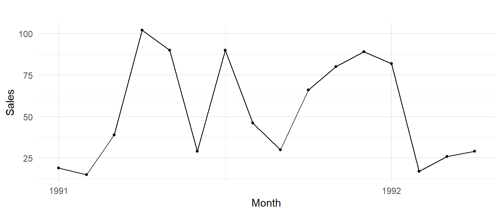
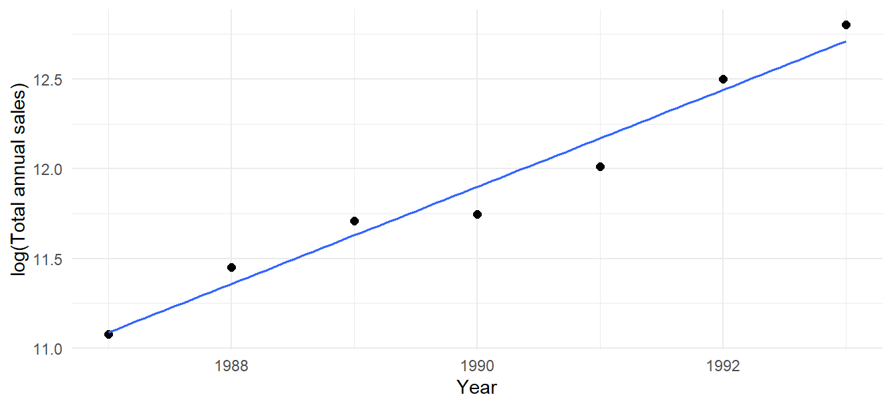
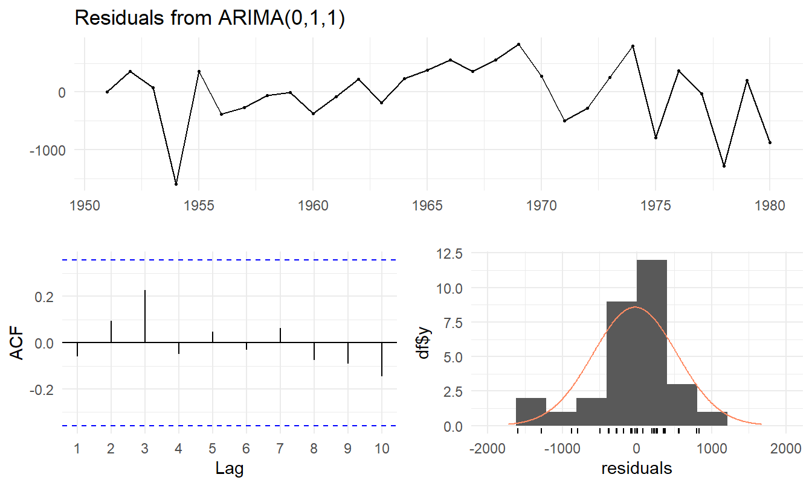
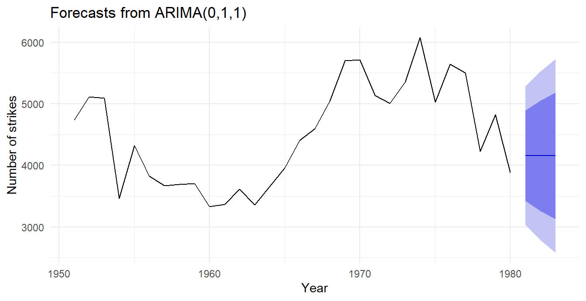

Show code
knives <- read_excel(data_file, sheet = 1)
names(knives) <- c("Time", "Sales")
y <- knives$Sales
knives_ts <- ts(y, start = c(1991, 1), frequency = 12)The forecasting process, time patterns, ACFs, moving averages, log-linear trends and ARIMA
Eden
All data come from TSA_Part1_DataSets.xlsx (course data sets), stored in the repository’s data/ folder. Sheets are read by position because the “souvenir” sheet name has a trailing space. Code is folded by default; click Show code to expand any chunk.
Context: producing sales forecasts for several products of a large biscuit manufacturer.
1. Problem definition. The aim is to forecast future sales for the company’s range of biscuits so that it can make strategic and operational decisions about how, when and where to sell and produce. This means pinning down exactly what is forecast: which products (individual biscuit lines or product families), at what level (national, regional or by retailer), in what units, how far ahead and how often (e.g. weekly forecasts for production scheduling, monthly forecasts a year ahead for ingredient purchasing and budgeting). This is done by talking to the people who will use the forecasts (production, procurement, sales and marketing, finance).
2. Data collection. For each product, collect a record of how many units were sold each period (e.g. monthly), building up a historical time series that can be used to forecast future sales. Also collect information on factors that help explain sales: prices, promotions, advertising campaigns, product launches and competitor activity, along with calendar effects such as public holidays, school holidays and weekends. Knowledge from the sales team about one-off events (stock-outs, factory shutdowns, a large once-off order) is also recorded so the data can be interpreted correctly.
3. Data analysis. This is the exploratory stage, done before any model is fitted. Plot each series and look for trend, seasonality (e.g. peaks before Christmas and Easter), cycles, outliers and structural breaks; check whether a transformation (e.g. logs) or differencing is needed; examine the ACF/PACF; and look at how sales relate to drivers such as promotions, in order to understand consumer demand at different times of the year. The arrow back from model selection shows the process is iterative: what is learnt when fitting a model can send us back to look at the data again.
4. Model selection and fitting. Based on the patterns found in the data analysis (and the ACF and PACF, which show the autocorrelation structure), choose candidate models, e.g. exponential smoothing (such as Holt–Winters for trending, seasonal products), ARIMA/seasonal ARIMA, state space models, or regression models with promotion and price effects, and estimate their parameters on the historical data.
5. Model validation. Assess how accurate each model’s forecasts are. Split the data so that a hold-out (test) set is kept back, and compare forecasts with the actual values using metrics such as RMSE, MAE and MAPE, using validation approaches such as rolling-origin (time series cross-validation) or sliding windows. Residuals should also be checked to make sure they look like white noise. The best-performing model is chosen.
6. Forecasting model deployment. Put the forecasts into practical use, since the whole point of forecasting is to support decisions. The chosen model is built into the company’s planning systems and produces forecasts (with prediction intervals) on a regular schedule, which are used for decisions such as production planning, which products to invest in or refine, and advertising strategies targeted at the products and times of year where sales are strongest.
7. Monitoring forecasting model performance. Continuously compare forecasts with actual sales as they come in and track the forecast errors over time, to detect bias or deterioration, for instance when consumer preferences change or a competitor changes strategy. This monitoring could be automated (e.g. an automated system or AI agent that is fed new data, updates the forecasts and flags when errors drift or market changes occur). When performance deteriorates, the model is re-estimated or the process returns to an earlier stage.
(a) Monthly sales of computer hard drives at a local store (10 years). Over the 10 years I would expect a trend: sales would initially increase steadily as computers became more common and people bought hard drives to keep their computers going for longer, but then trend downwards as technology develops and newer products (e.g. solid-state drives and cloud storage) replace them. There would also be seasonality within each year, e.g. at the beginning of the year when school and university go back, and around Black Friday and the festive season. (Because the data are monthly, within-month effects such as payday are not visible.)
(b) Hourly pulse rate of a person for one week. A strong daily (24-hour) seasonal pattern: pulse rate is elevated during the day while the person is moving around and active, and drops to a resting level while they sleep at night. If the person exercises every day, there will also be a regular daily spike in heart rate at that time. Little or no trend would be expected over a single week.
(c) Daily sales at a fast-food store for six months. A weekly seasonal pattern, with increased demand and sales over weekends (Friday nights to Sunday), plus increases around public holidays (and possibly month-end/payday). Six months is quite a short period, so long-term trends would be hard to see.
(d) Weekly electricity consumption for your local area (10 years). A strong annual seasonal pattern: in South Africa consumption is highest in winter (heating, longer nights) with a possible smaller summer peak from air-conditioning, and dips over the December holidays when businesses and industry shut down. There would also be a trend reflecting population growth and development, possibly offset in recent years by load-shedding, higher tariffs and rooftop solar.
The key idea is: a trend makes neighbouring values (even ones far apart) similar, so the ACF starts very high and decays slowly while staying positive; seasonality/cycles make the ACF oscillate, with peaks at lags equal to the period; and a series with neither has small autocorrelations that die out quickly.
| Time series | ACF | Reason |
|---|---|---|
| 1. Daily morning temperature of a cow | B | No seasonality or strong trend, just a slight downward drift and irregular variation. The ACF has small-to-moderate positive values that die out without any regular oscillation, consistent with a weakly persistent, non-seasonal series. |
| 2. Accidental deaths in USA (monthly) | A | Clear monthly seasonality with period 12 and no trend. ACF A has a large positive spike at lag 12 and strong negative values around lag 6 (half a seasonal cycle), the pattern of a period-12 seasonal series. |
| 3. International airline passengers | D | Strong upward trend plus seasonality. The trend produces very large positive autocorrelations that decay slowly (ACF D starts near 0.9 and stays high); the seasonality shows as a small bump around lag 12. |
| 4. Annual mink trappings (Canada) | C | An annual series with a regular population cycle of roughly 10 years. ACF C oscillates with peaks near lags 10 and 20 and troughs near lags 5 and 15, matching a ~10-year cycle. |

A \(k\)-month moving average forecast for the next month is the average of the last \(k\) observations: \[\hat{Y}_{t+1} = \frac{Y_t + Y_{t-1} + \cdots + Y_{t-k+1}}{k}.\]
| k | Values averaged | Forecast May 1992 |
|---|---|---|
| 3 | 17, 26, 29 | 24.00 |
| 5 | 89, 82, 17, 26, 29 | 48.60 |
| 7 | 66, 80, 89, 82, 17, 26, 29 | 55.57 |
| 9 | 46, 30, 66, 80, 89, 82, 17, 26, 29 | 51.67 |
| 11 | 29, 90, 46, 30, 66, 80, 89, 82, 17, 26, 29 | 53.09 |
For example, the 3-month MA forecast is \((17 + 26 + 29)/3 = 24\) and the 5-month MA forecast is \((89 + 82 + 17 + 26 + 29)/5 = 48.6\) (Table 1).
To choose \(k\) we compute the one-step-ahead forecasts each MA would have made historically and compare the errors. Because the 11-month MA can only forecast from December 1991 onwards, we report the errors both over all periods each MA can forecast and over the common period December 1991 – April 1992 (a fair like-for-like comparison).
ma_errors <- function(k, from) {
t_idx <- from:length(y)
fc <- sapply(t_idx, function(t) mean(y[(t - k):(t - 1)]))
e <- y[t_idx] - fc
c(MAE = mean(abs(e)), MSE = mean(e^2), MAPE = mean(abs(e / y[t_idx])) * 100)
}
err_all <- t(sapply(ks, function(k) ma_errors(k, k + 1)))
err_common <- t(sapply(ks, function(k) ma_errors(k, 12)))
err_tab <- data.frame(k = ks,
n_all = length(y) - ks, round(err_all, 2),
round(err_common, 2))
names(err_tab) <- c("k", "n", "MAE (all)", "MSE (all)", "MAPE % (all)",
"MAE (common)", "MSE (common)", "MAPE % (common)")
kable(err_tab)| k | n | MAE (all) | MSE (all) | MAPE % (all) | MAE (common) | MSE (common) | MAPE % (common) |
|---|---|---|---|---|---|---|---|
| 3 | 13 | 32.46 | 1484.29 | 85.32 | 30.00 | 1376.58 | 123.08 |
| 5 | 11 | 30.05 | 1031.17 | 89.29 | 33.88 | 1279.61 | 124.39 |
| 7 | 9 | 24.14 | 757.46 | 80.12 | 31.86 | 1130.81 | 115.84 |
| 9 | 7 | 27.00 | 860.80 | 88.22 | 30.09 | 1048.76 | 113.07 |
| 11 | 5 | 34.84 | 1313.79 | 122.95 | 34.84 | 1313.79 | 122.95 |
Using all available forecasts, the 7-month moving average gives the smallest MSE and MAE; over the common five-month window the 9-month MA has the smallest MSE, with \(k = 7\) a close second (Table 2). Short windows (\(k=3, 5\)) react too strongly to the large random month-to-month swings in this series, while \(k=11\) averages over too much old data. Assuming the past pattern continues, management should use a moderately long moving average, \(k = 7\) (or \(k = 9\)).
The error comparison is based on very few forecasts (only 5 in the common window), so the choice is not clear-cut; the series is very noisy and none of the MAs forecasts it particularly well.
The variance of the series increases with its level: the seasonal swings are proportional to the level (multiplicative seasonality). Most models (and linear regression) assume constant variance and additive components. Taking logarithms stabilises the variance and turns multiplicative effects into additive ones (\(\log(T \times S \times E) = \log T + \log S + \log E\)), and turns exponential growth into a linear trend (Figure 4).
| Year | Total sales | log(Total sales) |
|---|---|---|
| 1987 | 64636.10 | 11.0765 |
| 1988 | 93986.04 | 11.4509 |
| 1989 | 121808.00 | 11.7102 |
| 1990 | 126059.87 | 11.7445 |
| 1991 | 164644.51 | 12.0115 |
| 1992 | 268717.73 | 12.5014 |
| 1993 | 362657.07 | 12.8012 |
Call:
lm(formula = logTotal ~ Year, data = annual)
Residuals:
1987 1988 1989 1990 1991 1992 1993
-0.01119 0.09260 0.08131 -0.15496 -0.15852 0.06077 0.08998
Coefficients:
Estimate Std. Error t value Pr(>|t|)
(Intercept) -526.56801 46.43933 -11.34 9.33e-05 ***
Year 0.27059 0.02334 11.60 8.37e-05 ***
---
Signif. codes: 0 '***' 0.001 '**' 0.01 '*' 0.05 '.' 0.1 ' ' 1
Residual standard error: 0.1235 on 5 degrees of freedom
Multiple R-squared: 0.9641, Adjusted R-squared: 0.957
F-statistic: 134.4 on 1 and 5 DF, p-value: 8.374e-05
The fitted line is \[\widehat{\log(\text{Total})} = -526.568 + 0.2706 \times \text{Year},\] with \(R^2 = 0.964\). The slope implies annual sales grow by roughly \(e^{0.2706} - 1 \approx 31.1\%\) per year.
| Year | Predicted log(Total) | Lower 95% PI | Upper 95% PI |
|---|---|---|---|
| 1994 | 12.9818 | 12.5662 | 13.3974 |
| 1995 | 13.2524 | 12.7995 | 13.7053 |
| 1996 | 13.5230 | 13.0283 | 14.0177 |
Since the model is for \(\log(\text{Total})\), we exponentiate the point predictions and interval end-points:
| Year | Predicted total sales | Lower 95% PI | Upper 95% PI |
|---|---|---|---|
| 1994 | 434 443 | 286 706 | 658 309 |
| 1995 | 569 439 | 362 039 | 895 651 |
| 1996 | 746 383 | 455 122 | 1 224 040 |
The intervals are asymmetric on the original scale (wider above the prediction than below), reflecting the multiplicative nature of the uncertainty. Note that \(e^{\hat{y}}\) estimates the median rather than the mean of total sales. The intervals are very wide because the regression is based on only 7 annual observations and the forecasts extrapolate beyond the data.
Together these show the series is non-stationary and should be differenced (first differences \(Y_t - Y_{t-1}\), i.e. the daily price changes, are likely to be stationary).
Hence ARIMA(0,1,1) is appropriate. (No constant is included since the differences have mean approximately zero, so there is no persistent trend in the series.)
With \(B Y_t = Y_{t-1}\), the ARIMA(0,1,1) model is \[(1 - B)\,Y_t = (1 + \theta_1 B)\, e_t \quad\Longleftrightarrow\quad Y_t = Y_{t-1} + e_t + \theta_1 e_{t-1},\] where \(e_t\) is white noise.
R uses the “\(+\theta\)” sign convention; some textbooks write \((1 - \theta_1 B)e_t\), in which case the sign of the estimate is reversed.
Series: strikes
ARIMA(0,1,1)
Coefficients:
ma1
-0.3094
s.e. 0.1515
sigma^2 = 330817: log likelihood = -224.98
AIC=453.95 AICc=454.41 BIC=456.69The fitted model is \[(1 - B)\,Y_t = (1 -0.3094\,B)\,e_t, \qquad \hat\sigma^2 = 330 817.\]
Ljung-Box test
data: Residuals from ARIMA(0,1,1)
Q* = 4.2581, df = 9, p-value = 0.8936
Model df: 1. Total lags used: 10
The model is therefore satisfactory: the residuals behave like white noise, so the model has captured the structure in the data (Figure 8).
From \(Y_t = Y_{t-1} + e_t + \theta_1 e_{t-1}\), the forecasts made at origin \(n = 1980\) are \[\hat{Y}_{n+1} = Y_n + \hat\theta_1\, e_n, \qquad \hat{Y}_{n+h} = \hat{Y}_{n+h-1} \;\;(h \ge 2),\] because future errors have expectation zero. So all three forecasts are equal.
With \(Y_{1980} = 3885\), the last residual \(e_{1980} = -880.24\), and \(\hat\theta_1 = -0.3094\): \[\hat{Y}_{1981} = 3885 + (-0.3094)(-880.24) = 4157.33,\] \[\hat{Y}_{1982} = \hat{Y}_{1983} = 4157.33.\]
Checking with R:
Point Forecast Lo 80 Hi 80 Lo 95 Hi 95
1981 4157.329 3420.224 4894.435 3030.024 5284.635
1982 4157.329 3261.525 5053.134 2787.314 5527.345
1983 4157.329 3126.986 5187.673 2581.555 5733.104The R forecasts (4157.33 for each of 1981–1983) agree with the hand calculation.

The prediction intervals widen with the forecast horizon (Figure 9), since for a non-stationary (integrated) model the forecast-error variance keeps growing: \(\text{Var} = \sigma^2[1 + (h-1)(1+\theta_1)^2]\).
The model \(Y_t = c + \phi_1 Y_{t-1} + \phi_2 Y_{t-2} + \phi_3 Y_{t-3} + \phi_4 Y_{t-4} + e_t\) is an autoregressive model of order 4 on the undifferenced series with no moving-average terms: an ARIMA(4,0,0), i.e. AR(4), with \(p = 4\), \(d = 0\), \(q = 0\).
The time plot fluctuates around a fairly constant mean (roughly 300–630 million tons, no persistent trend) and the ACF dies down quickly, so the series appears stationary and no differencing is needed (\(d=0\)). The ACF decays in a damped, sine-wave-like fashion (typical of an AR process), while the PACF has significant spikes at lags 1 and 4 and cuts off after lag 4, which identifies an AR(4) model.
Future errors are set to zero and forecasts are substituted for unknown future values:
\[ \begin{aligned} \hat{Y}_{1969} &= 146.1 + 0.891(545) - 0.257(552) + 0.392(534) - 0.333(512) = 528.66 \\ \hat{Y}_{1970} &= 146.1 + 0.891(528.66) - 0.257(545) + 0.392(552) - 0.333(534) = 515.64 \\ \hat{Y}_{1971} &= 146.1 + 0.891(515.64) - 0.257(528.66) + 0.392(545) - 0.333(552) = 499.49 \end{aligned} \]
| Year | Forecast (million tons) |
|---|---|
| 1969 | 528.66 |
| 1970 | 515.64 |
| 1971 | 499.49 |
The forecasts decline gradually from the 1968 level, moving back towards the long-run mean of the series, \(\mu = c/(1 - \sum\phi_i) = 475.9\) million tons, as expected for a stationary AR model (Table 6).
---
title: "Time Series Analysis Part 1: Exercise 1"
subtitle: "The forecasting process, time patterns, ACFs, moving averages, log-linear trends and ARIMA"
author: "Eden"
format:
html:
toc: true
toc-depth: 2
number-sections: false
code-fold: true
code-summary: "Show code"
fig-width: 7
fig-height: 3.6
df-print: kable
execute:
echo: true
warning: false
message: false
---
::: {.callout-note collapse="true"}
## Data and setup
All data come from `TSA_Part1_DataSets.xlsx` (course data sets), stored in the repository's `data/` folder. Sheets are read by position because the "souvenir" sheet name has a trailing space. Code is folded by default; click **Show code** to expand any chunk.
:::
```{r}
#| label: setup
#| include: false
library(readxl)
library(forecast)
library(ggplot2)
library(knitr)
theme_set(theme_minimal(base_size = 11))
data_file <- here::here("data", "TSA_Part1_DataSets.xlsx")
```
## Question 1: The forecasting process (15)
*Context: producing sales forecasts for several products of a large biscuit manufacturer.*
**1. Problem definition.** The aim is to forecast future sales for the company's range of biscuits so that it can make strategic and operational decisions about how, when and where to sell and produce. This means pinning down exactly what is forecast: which products (individual biscuit lines or product families), at what level (national, regional or by retailer), in what units, how far ahead and how often (e.g. weekly forecasts for production scheduling, monthly forecasts a year ahead for ingredient purchasing and budgeting). This is done by talking to the people who will use the forecasts (production, procurement, sales and marketing, finance).
**2. Data collection.** For each product, collect a record of how many units were sold each period (e.g. monthly), building up a historical time series that can be used to forecast future sales. Also collect information on factors that help explain sales: prices, promotions, advertising campaigns, product launches and competitor activity, along with calendar effects such as public holidays, school holidays and weekends. Knowledge from the sales team about one-off events (stock-outs, factory shutdowns, a large once-off order) is also recorded so the data can be interpreted correctly.
**3. Data analysis.** This is the exploratory stage, done before any model is fitted. Plot each series and look for trend, seasonality (e.g. peaks before Christmas and Easter), cycles, outliers and structural breaks; check whether a transformation (e.g. logs) or differencing is needed; examine the ACF/PACF; and look at how sales relate to drivers such as promotions, in order to understand consumer demand at different times of the year. The arrow back from model selection shows the process is iterative: what is learnt when fitting a model can send us back to look at the data again.
**4. Model selection and fitting.** Based on the patterns found in the data analysis (and the ACF and PACF, which show the autocorrelation structure), choose candidate models, e.g. exponential smoothing (such as Holt–Winters for trending, seasonal products), ARIMA/seasonal ARIMA, state space models, or regression models with promotion and price effects, and estimate their parameters on the historical data.
**5. Model validation.** Assess how accurate each model's forecasts are. Split the data so that a hold-out (test) set is kept back, and compare forecasts with the actual values using metrics such as RMSE, MAE and MAPE, using validation approaches such as rolling-origin (time series cross-validation) or sliding windows. Residuals should also be checked to make sure they look like white noise. The best-performing model is chosen.
**6. Forecasting model deployment.** Put the forecasts into practical use, since the whole point of forecasting is to support decisions. The chosen model is built into the company's planning systems and produces forecasts (with prediction intervals) on a regular schedule, which are used for decisions such as production planning, which products to invest in or refine, and advertising strategies targeted at the products and times of year where sales are strongest.
**7. Monitoring forecasting model performance.** Continuously compare forecasts with actual sales as they come in and track the forecast errors over time, to detect bias or deterioration, for instance when consumer preferences change or a competitor changes strategy. This monitoring could be automated (e.g. an automated system or AI agent that is fed new data, updates the forecasts and flags when errors drift or market changes occur). When performance deteriorates, the model is re-estimated or the process returns to an earlier stage.
## Question 2: Expected time patterns (8)
**(a) Monthly sales of computer hard drives at a local store (10 years).** Over the 10 years I would expect a *trend*: sales would initially increase steadily as computers became more common and people bought hard drives to keep their computers going for longer, but then trend downwards as technology develops and newer products (e.g. solid-state drives and cloud storage) replace them. There would also be *seasonality* within each year, e.g. at the beginning of the year when school and university go back, and around Black Friday and the festive season. (Because the data are monthly, within-month effects such as payday are not visible.)
**(b) Hourly pulse rate of a person for one week.** A strong *daily (24-hour) seasonal pattern*: pulse rate is elevated during the day while the person is moving around and active, and drops to a resting level while they sleep at night. If the person exercises every day, there will also be a regular daily spike in heart rate at that time. Little or no trend would be expected over a single week.
**(c) Daily sales at a fast-food store for six months.** A *weekly seasonal pattern*, with increased demand and sales over weekends (Friday nights to Sunday), plus increases around public holidays (and possibly month-end/payday). Six months is quite a short period, so long-term trends would be hard to see.
**(d) Weekly electricity consumption for your local area (10 years).** A strong *annual seasonal pattern*: in South Africa consumption is highest in winter (heating, longer nights) with a possible smaller summer peak from air-conditioning, and dips over the December holidays when businesses and industry shut down. There would also be a *trend* reflecting population growth and development, possibly offset in recent years by load-shedding, higher tariffs and rooftop solar.
## Question 3: Matching series to ACFs (12)
The key idea is: a **trend** makes neighbouring values (even ones far apart) similar, so the ACF starts very high and decays *slowly* while staying positive; **seasonality/cycles** make the ACF *oscillate*, with peaks at lags equal to the period; and a series with **neither** has small autocorrelations that die out quickly.
| Time series | ACF | Reason |
|:-----------------|:---:|:----------------------------------------------------------------|
| 1. Daily morning temperature of a cow | **B** | No seasonality or strong trend, just a slight downward drift and irregular variation. The ACF has small-to-moderate positive values that die out without any regular oscillation, consistent with a weakly persistent, non-seasonal series. |
| 2. Accidental deaths in USA (monthly) | **A** | Clear monthly seasonality with period 12 and no trend. ACF A has a large positive spike at lag 12 and strong negative values around lag 6 (half a seasonal cycle), the pattern of a period-12 seasonal series. |
| 3. International airline passengers | **D** | Strong upward trend plus seasonality. The trend produces very large positive autocorrelations that decay slowly (ACF D starts near 0.9 and stays high); the seasonality shows as a small bump around lag 12. |
| 4. Annual mink trappings (Canada) | **C** | An annual series with a regular population cycle of roughly 10 years. ACF C oscillates with peaks near lags 10 and 20 and troughs near lags 5 and 15, matching a ~10-year cycle. |
: Matching each series to its ACF {.striped .hover}
## Question 4: Electric knives: moving averages (15)
```{r}
#| label: knives-data
knives <- read_excel(data_file, sheet = 1)
names(knives) <- c("Time", "Sales")
y <- knives$Sales
knives_ts <- ts(y, start = c(1991, 1), frequency = 12)
```
```{r}
#| label: fig-knives
#| fig-cap: "Monthly sales of electric knives, January 1991 – April 1992."
#| fig-height: 3
autoplot(knives_ts) + geom_point(size = 1) +
labs(x = "Month", y = "Sales")
```
### (a) Forecasts for May 1992 (10)
A $k$-month moving average forecast for the next month is the average of the last $k$ observations:
$$\hat{Y}_{t+1} = \frac{Y_t + Y_{t-1} + \cdots + Y_{t-k+1}}{k}.$$
```{r}
#| label: tbl-knives-ma
#| tbl-cap: "Moving average forecasts for May 1992."
ks <- c(3, 5, 7, 9, 11)
ma_fc <- sapply(ks, function(k) mean(tail(y, k)))
vals <- sapply(ks, function(k) paste(tail(y, k), collapse = ", "))
kable(data.frame(k = ks, `Values averaged` = vals,
`Forecast May 1992` = round(ma_fc, 2), check.names = FALSE),
align = "clr")
```
For example, the 3-month MA forecast is $(17 + 26 + 29)/3 = `r round(ma_fc[1], 2)`$ and the 5-month MA forecast is $(89 + 82 + 17 + 26 + 29)/5 = `r round(ma_fc[2], 2)`$ (@tbl-knives-ma).
### (b) Choice of $k$ (5)
To choose $k$ we compute the one-step-ahead forecasts each MA would have made historically and compare the errors. Because the 11-month MA can only forecast from December 1991 onwards, we report the errors both over **all** periods each MA can forecast and over the **common** period December 1991 – April 1992 (a fair like-for-like comparison).
```{r}
#| label: tbl-knives-errors
#| tbl-cap: "One-step-ahead forecast errors of each moving average."
ma_errors <- function(k, from) {
t_idx <- from:length(y)
fc <- sapply(t_idx, function(t) mean(y[(t - k):(t - 1)]))
e <- y[t_idx] - fc
c(MAE = mean(abs(e)), MSE = mean(e^2), MAPE = mean(abs(e / y[t_idx])) * 100)
}
err_all <- t(sapply(ks, function(k) ma_errors(k, k + 1)))
err_common <- t(sapply(ks, function(k) ma_errors(k, 12)))
err_tab <- data.frame(k = ks,
n_all = length(y) - ks, round(err_all, 2),
round(err_common, 2))
names(err_tab) <- c("k", "n", "MAE (all)", "MSE (all)", "MAPE % (all)",
"MAE (common)", "MSE (common)", "MAPE % (common)")
kable(err_tab)
```
```{r}
#| label: knives-best
#| include: false
best_all_mse <- ks[which.min(err_all[, "MSE"])]
best_common_mse <- ks[which.min(err_common[, "MSE"])]
```
Using all available forecasts, the **`r best_all_mse`-month** moving average gives the smallest MSE and MAE; over the common five-month window the **`r best_common_mse`-month** MA has the smallest MSE, with $k = 7$ a close second (@tbl-knives-errors). Short windows ($k=3, 5$) react too strongly to the large random month-to-month swings in this series, while $k=11$ averages over too much old data. Assuming the past pattern continues, management should use a **moderately long moving average, $k = 7$ (or $k = 9$)**.
::: {.callout-caution}
The error comparison is based on very few forecasts (only 5 in the common window), so the choice is not clear-cut; the series is very noisy and none of the MAs forecasts it particularly well.
:::
## Question 5: Souvenir shop sales (20)
```{r}
#| label: souvenir-data
souv <- read_excel(data_file, sheet = 2)
names(souv)[1] <- "Month"
souv_ts <- ts(as.vector(as.matrix(souv[, -1])), start = c(1987, 1), frequency = 12)
```
### (a) Time plot and description (4)
::: {.panel-tabset}
## Time plot
```{r}
#| label: fig-souvenir
#| fig-cap: "Monthly sales of the souvenir shop, January 1987 – December 1993."
autoplot(souv_ts) + geom_point(size = 0.8) +
labs(x = "Year", y = "Sales")
```
## Seasonal plot
```{r}
#| label: fig-souvenir-season
#| fig-cap: "Seasonal plot: each line is one year."
#| fig-height: 3.4
ggseasonplot(souv_ts, year.labels = TRUE) + labs(title = NULL, y = "Sales")
```
:::
* **Trend:** sales increase strongly over time, consistent with the shop expanding its premises, products and staff. The growth accelerates in 1992–1993.
* **Seasonality:** a very strong annual pattern. Sales build up through November and peak sharply every **December** (Christmas tourists), then drop back in January. A smaller secondary peak occurs each **March** from 1988 onward (the surf festival). There is no March peak in 1987 because the festival only started in 1988.
* **Changing variance:** the size of the seasonal fluctuations grows with the level of the series (the December peaks become enormous), so the seasonality is multiplicative rather than additive.
* **Unusual features:** sales in **1990–1991 stalled**: December 1990 (`r round(window(souv_ts, c(1990,12), c(1990,12)))`) was *below* December 1989 (`r round(window(souv_ts, c(1989,12), c(1989,12)))`), and January and March 1991 were lower than a year earlier, breaking the upward trend (possibly an economic downturn or poor tourist season). There are also some months that deviate from the usual seasonal shape, e.g. the unusually high March 1990 and the very sharp jump in December 1992 and 1993.
### (b) Why take logarithms? (2)
The variance of the series increases with its level: the seasonal swings are proportional to the level (multiplicative seasonality). Most models (and linear regression) assume constant variance and additive components. Taking logarithms stabilises the variance and turns multiplicative effects into additive ones ($\log(T \times S \times E) = \log T + \log S + \log E$), and turns exponential growth into a linear trend (@fig-souvenir-log).
```{r}
#| label: fig-souvenir-log
#| fig-cap: "Log of monthly sales; the seasonal swings are now roughly constant in size."
#| fig-height: 3
autoplot(log(souv_ts)) + labs(x = "Year", y = "log(Sales)")
```
### (c) Annual totals, logs and linear regression (6)
```{r}
#| label: tbl-souvenir-annual
#| tbl-cap: "Total annual sales and their logarithms."
annual <- data.frame(Year = as.numeric(names(souv)[-1]),
Total = colSums(souv[, -1]))
annual$logTotal <- log(annual$Total)
kable(annual, digits = c(0, 2, 4), row.names = FALSE,
col.names = c("Year", "Total sales", "log(Total sales)"))
```
```{r}
#| label: souvenir-reg
fit_annual <- lm(logTotal ~ Year, data = annual)
summary(fit_annual)
```
```{r}
#| label: fig-annual-reg
#| fig-cap: "Log of total annual sales with fitted regression line."
#| fig-height: 3.2
ggplot(annual, aes(Year, logTotal)) +
geom_point(size = 2) +
geom_smooth(method = "lm", se = FALSE, linewidth = 0.7) +
labs(y = "log(Total annual sales)")
```
The fitted line is
$$\widehat{\log(\text{Total})} = `r round(coef(fit_annual)[1], 3)` + `r round(coef(fit_annual)[2], 4)` \times \text{Year},$$
with $R^2 = `r round(summary(fit_annual)$r.squared, 3)`$. The slope implies annual sales grow by roughly $e^{`r round(coef(fit_annual)[2], 4)`} - 1 \approx `r round(100*(exp(coef(fit_annual)[2]) - 1), 1)`\%$ per year.
### (d) Predictions of log total sales for 1994–1996 (4)
```{r}
#| label: tbl-souvenir-pred
#| tbl-cap: "Predicted log total sales with 95% prediction intervals."
new_years <- data.frame(Year = 1994:1996)
pred_log <- predict(fit_annual, newdata = new_years,
interval = "prediction", level = 0.95)
pred_log_tab <- data.frame(Year = 1994:1996, round(pred_log, 4))
kable(pred_log_tab,
col.names = c("Year", "Predicted log(Total)", "Lower 95% PI", "Upper 95% PI"))
```
### (e) Back-transformed predictions and intervals (4)
Since the model is for $\log(\text{Total})$, we exponentiate the point predictions and interval end-points:
```{r}
#| label: tbl-souvenir-backtransform
#| tbl-cap: "Back-transformed predictions of total annual sales."
pred_raw <- data.frame(Year = as.character(1994:1996), exp(pred_log))
kable(pred_raw, digits = 0, format.args = list(big.mark = " "),
col.names = c("Year", "Predicted total sales", "Lower 95% PI", "Upper 95% PI"))
```
The intervals are asymmetric on the original scale (wider above the prediction than below), reflecting the multiplicative nature of the uncertainty. Note that $e^{\hat{y}}$ estimates the *median* rather than the mean of total sales. The intervals are very wide because the regression is based on only 7 annual observations and the forecasts extrapolate beyond the data.
## Question 6: IBM daily closing prices (4)
* **Time plot:** the series does not fluctuate around a constant mean. It wanders up from about 450 to 600, then falls sharply to about 300–400, with long local "trends". There is no level to which it reverts, which is typical of a random walk.
* **ACF:** the autocorrelations start close to 1 and decay extremely slowly (still about 0.8 at lag 25). For a stationary series the ACF should drop to zero quickly; a slowly decaying ACF is the classic sign of non-stationarity.
* **PACF:** there is a single very large spike at lag 1 of almost exactly 1, with all other partial autocorrelations negligible. This indicates $Y_t \approx Y_{t-1} + e_t$, i.e. an AR(1) with $\phi_1 \approx 1$, i.e. a unit root.
Together these show the series is non-stationary and should be differenced (first differences $Y_t - Y_{t-1}$, i.e. the daily price changes, are likely to be stationary).
## Question 7: Strikes in the USA, 1951–1980 (16)
```{r}
#| label: strikes-data
strikes_raw <- read_excel(data_file, sheet = 3, .name_repair = "minimal")
strikes <- ts(c(strikes_raw[[2]], strikes_raw[[5]]), start = 1951)
```
### (a) Why ARIMA(0,1,1)? (3)
::: {.panel-tabset}
## Original series
```{r}
#| label: fig-strikes-display
#| fig-cap: "Strikes series: time plot, ACF and PACF."
#| fig-height: 4
ggtsdisplay(strikes, main = "Number of strikes", xlab = "Year")
```
## First differences
```{r}
#| label: fig-strikes-diff
#| fig-cap: "First differences of the strikes series: time plot, ACF and PACF."
#| fig-height: 4
ggtsdisplay(diff(strikes), main = "Differenced number of strikes", xlab = "Year")
```
:::
* The original series (@fig-strikes-display) wanders: it falls from about 5 000 in the early 1950s to about 3 400 in the early 1960s, then rises to around 6 000 in the 1970s, without reverting to a fixed mean. The ACF decays slowly (`r round(acf(strikes, plot = FALSE)$acf[2], 2)` at lag 1 and still positive for several lags), and the PACF has one large spike at lag 1. The series is non-stationary, so it should be **differenced once** ($d = 1$).
* The differenced series (@fig-strikes-diff) fluctuates around a constant mean of about zero with roughly constant variance, so it appears stationary. Its ACF has a single negative spike at lag 1 (`r round(acf(diff(strikes), plot = FALSE)$acf[2], 2)`, close to the $\pm 2/\sqrt{n} \approx \pm `r round(2/sqrt(length(diff(strikes))), 2)`$ bound) and is negligible thereafter (the ACF "cuts off" after lag 1), while the PACF decays. This is the signature of an **MA(1)** process for the differences ($q = 1$, $p = 0$).
Hence ARIMA(0,1,1) is appropriate. (No constant is included since the differences have mean approximately zero, so there is no persistent trend in the series.)
### (b) Backshift operator form (2)
With $B Y_t = Y_{t-1}$, the ARIMA(0,1,1) model is
$$(1 - B)\,Y_t = (1 + \theta_1 B)\, e_t \quad\Longleftrightarrow\quad Y_t = Y_{t-1} + e_t + \theta_1 e_{t-1},$$
where $e_t$ is white noise.
::: {.callout-tip}
R uses the "$+\theta$" sign convention; some textbooks write $(1 - \theta_1 B)e_t$, in which case the sign of the estimate is reversed.
:::
### (c) Fit the model and examine the residuals (5)
```{r}
#| label: strikes-fit
fit_strikes <- Arima(strikes, order = c(0, 1, 1))
fit_strikes
theta <- coef(fit_strikes)["ma1"]
```
The fitted model is
$$(1 - B)\,Y_t = (1 `r round(theta, 4)`\,B)\,e_t, \qquad \hat\sigma^2 = `r format(round(fit_strikes$sigma2), big.mark = " ")`.$$
```{r}
#| label: fig-strikes-resid
#| fig-cap: "Residual diagnostics for the ARIMA(0,1,1) model."
#| fig-height: 4.2
lb <- checkresiduals(fit_strikes, lag = 10)
```
* The **time plot** of residuals shows no pattern and fluctuates around zero with roughly constant variance.
* All residual **autocorrelations** lie within the significance bounds, so no autocorrelation remains.
* The **histogram** is roughly symmetric and consistent with normality (given only 29 residuals).
* The **Ljung–Box test** gives $Q^* = `r round(lb$statistic, 3)`$ on `r lb$parameter` df, p-value $= `r round(lb$p.value, 3)`$, so we do not reject the null hypothesis that the residuals are white noise.
The model is therefore **satisfactory**: the residuals behave like white noise, so the model has captured the structure in the data (@fig-strikes-resid).
### (d) Forecasts three steps ahead by hand (4)
From $Y_t = Y_{t-1} + e_t + \theta_1 e_{t-1}$, the forecasts made at origin $n = 1980$ are
$$\hat{Y}_{n+1} = Y_n + \hat\theta_1\, e_n, \qquad \hat{Y}_{n+h} = \hat{Y}_{n+h-1} \;\;(h \ge 2),$$
because future errors have expectation zero. So all three forecasts are equal.
```{r}
#| label: strikes-hand
y_n <- tail(strikes, 1)
e_n <- tail(residuals(fit_strikes), 1)
f1 <- y_n + theta * e_n
```
With $Y_{1980} = `r y_n`$, the last residual $e_{1980} = `r round(e_n, 2)`$, and $\hat\theta_1 = `r round(theta, 4)`$:
$$\hat{Y}_{1981} = `r y_n` + (`r round(theta, 4)`)(`r round(e_n, 2)`) = `r round(f1, 2)`,$$
$$\hat{Y}_{1982} = \hat{Y}_{1983} = `r round(f1, 2)`.$$
Checking with R:
```{r}
#| label: strikes-fc
fc_strikes <- forecast(fit_strikes, h = 3)
fc_strikes
```
The R forecasts (`r round(fc_strikes$mean[1], 2)` for each of 1981–1983) agree with the hand calculation.
### (e) Plot with forecasts and prediction intervals (2)
```{r}
#| label: fig-strikes-fc
#| fig-cap: "Strikes series with ARIMA(0,1,1) forecasts for 1981–1983 and 80%/95% prediction intervals."
autoplot(fc_strikes) + labs(x = "Year", y = "Number of strikes")
```
The prediction intervals widen with the forecast horizon (@fig-strikes-fc), since for a non-stationary (integrated) model the forecast-error variance keeps growing: $\text{Var} = \sigma^2[1 + (h-1)(1+\theta_1)^2]$.
## Question 8: Bituminous coal production (10)
### (a) What sort of ARIMA model? (3)
The model $Y_t = c + \phi_1 Y_{t-1} + \phi_2 Y_{t-2} + \phi_3 Y_{t-3} + \phi_4 Y_{t-4} + e_t$ is an autoregressive model of order 4 on the undifferenced series with no moving-average terms: an **ARIMA(4,0,0)**, i.e. AR(4), with $p = 4$, $d = 0$, $q = 0$.
### (b) Why was this model chosen? (1)
The time plot fluctuates around a fairly constant mean (roughly 300–630 million tons, no persistent trend) and the ACF dies down quickly, so the series appears stationary and **no differencing** is needed ($d=0$). The ACF decays in a damped, sine-wave-like fashion (typical of an AR process), while the **PACF has significant spikes at lags 1 and 4 and cuts off after lag 4**, which identifies an AR(4) model.
### (c) Forecasts for 1969–1971 (6)
```{r}
#| label: coal-fc
c0 <- 146.1
phi <- c(0.891, -0.257, 0.392, -0.333)
coal <- c(`1964` = 467, `1965` = 512, `1966` = 534, `1967` = 552, `1968` = 545)
Y <- coal
for (h in 1:3) {
n <- length(Y)
Y <- c(Y, c0 + sum(phi * Y[n:(n - 3)])) # uses Y_{t-1}, ..., Y_{t-4}
}
coal_fc <- tail(Y, 3)
```
Future errors are set to zero and forecasts are substituted for unknown future values:
$$
\begin{aligned}
\hat{Y}_{1969} &= 146.1 + 0.891(545) - 0.257(552) + 0.392(534) - 0.333(512) = `r sprintf("%.2f", coal_fc[1])` \\
\hat{Y}_{1970} &= 146.1 + 0.891(`r sprintf("%.2f", coal_fc[1])`) - 0.257(545) + 0.392(552) - 0.333(534) = `r sprintf("%.2f", coal_fc[2])` \\
\hat{Y}_{1971} &= 146.1 + 0.891(`r sprintf("%.2f", coal_fc[2])`) - 0.257(`r sprintf("%.2f", coal_fc[1])`) + 0.392(545) - 0.333(552) = `r sprintf("%.2f", coal_fc[3])`
\end{aligned}
$$
```{r}
#| label: tbl-coal
#| tbl-cap: "AR(4) forecasts of bituminous coal production."
kable(data.frame(Year = 1969:1971, `Forecast (million tons)` = round(coal_fc, 2),
check.names = FALSE))
```
The forecasts decline gradually from the 1968 level, moving back towards the long-run mean of the series, $\mu = c/(1 - \sum\phi_i) = `r round(c0 / (1 - sum(phi)), 1)`$ million tons, as expected for a stationary AR model (@tbl-coal).